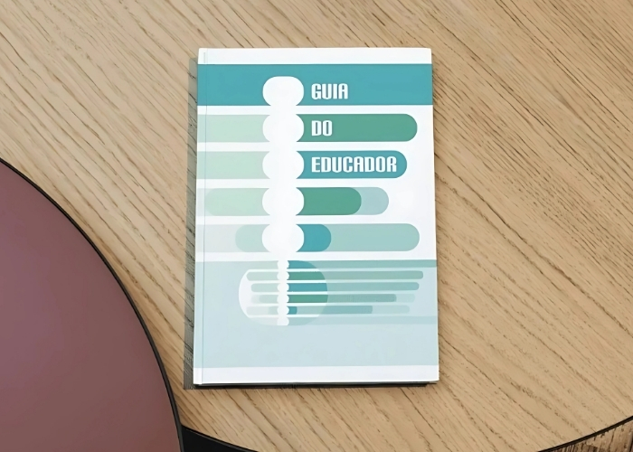

Guia do Educador
Uma introdução ao trabalho do Instituto Girassol e do Projeto Academia de Desenvolvimento Juvenil.
Clique aqui para baixarUma introdução ao trabalho do Instituto Girassol e do Projeto Academia de Desenvolvimento Juvenil.
Clique aqui para baixarUm estudo para o planejamento e a execução de políticas públicas sociais.
Clique aqui para baixarO diagnóstico ajudou a mapear dados sobre a infância e juventude, identificar forças, riscos e vulnerabilidades, e orientar um plano de ação fundamentado, articulado e eficiente.
Clique aqui para baixarO livro apresenta um estudo aprofundado sobre a realidade das pessoas idosas da cidade, analisando aspectos como perfil socioeconômico, acesso a serviços públicos, saúde, educação, renda, participação social e violações de direitos.
Clique aqui para baixar